天気がいいので畜産ふれあいまつりに行きました。
2014/10/18
畜産技術センターの木が少し紅葉してて綺麗でした。
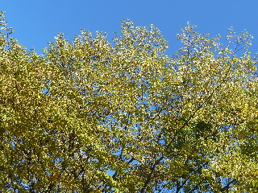
お出かけにいい時期になりましたね。
他にも色々行きたい気分になりました。
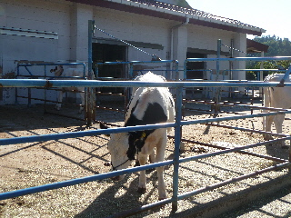
畜産技術センターなので、牛のエサやりをしました。
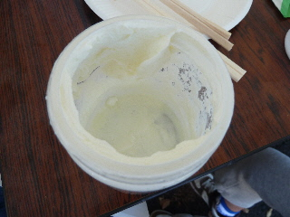
毎年恒例のバター作りをしました。
生クリームで作るバターは美味しいなー。
今年のバター作りの容器はとても立派なので、何かに再利用したいと思いました。
今年は豚肉の試食がありました。
とても美味しかったです。
畜産技術センターのまつり。
2012/10/13
今年も畜産ふれあいまつりに行きました。
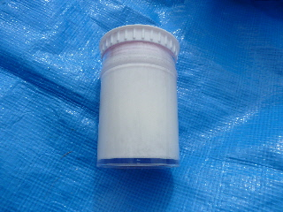
容器を一生懸命振ってバターを作りました。
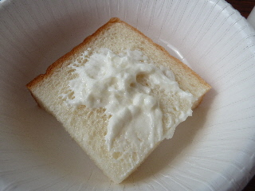
出来上がったら食パンに付けて食べました。
生クリーム味がしっかりあって、美味しかったです。
市販のバターもこんな味だったらいいのにな。
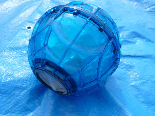
ボールを転がしてアイスクリームも作りました。
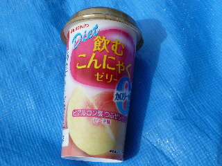
牛乳に関するクイズをやったらジュースがもらえました。
正解数に関係なく、参加するだけでもらえました。
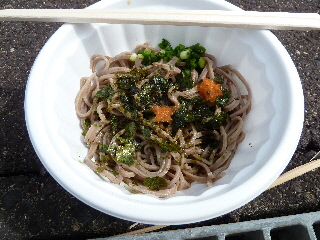
最後に地元のお蕎麦を食べました。
ツルツルとしていて、固めでした。
ぶっかけうどんのお蕎麦版にたいな感じで美味しかったです。
畜産ふれあいまつり2011がありました。
2011/10/08
出雲市古志町にある島根県畜産技術センターで、畜産ふれあいまつり2011（第六回しまね牛乳まつりinいずも）がありました。
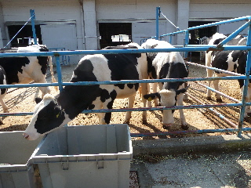
牛のえさやりをしました。無料です。
牛が沢山いたので、沢山えさがあげれました。
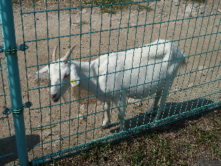
ヤギは近くに生えていた草をあげたら食べてくれました。
近くにいたヒツジは食べてくれませんでした。
動物のえさやりは楽しいです。
お子さん向けに、乗馬があったり、牛の搾乳（抽選で30組限定）もあったので、家族連れでにぎわっていました。
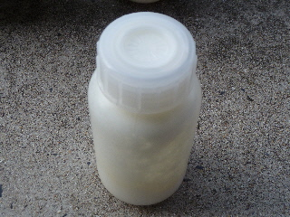
私は上の写真の容器を振ってバターを作りました。
あと、アイスクリームを作って楽しみました。
なんとイベントは全部無料です。
会場ではわたがしとポップコーンも無料で配ってました。
いろいろ体験出来て楽しいイベントでした。